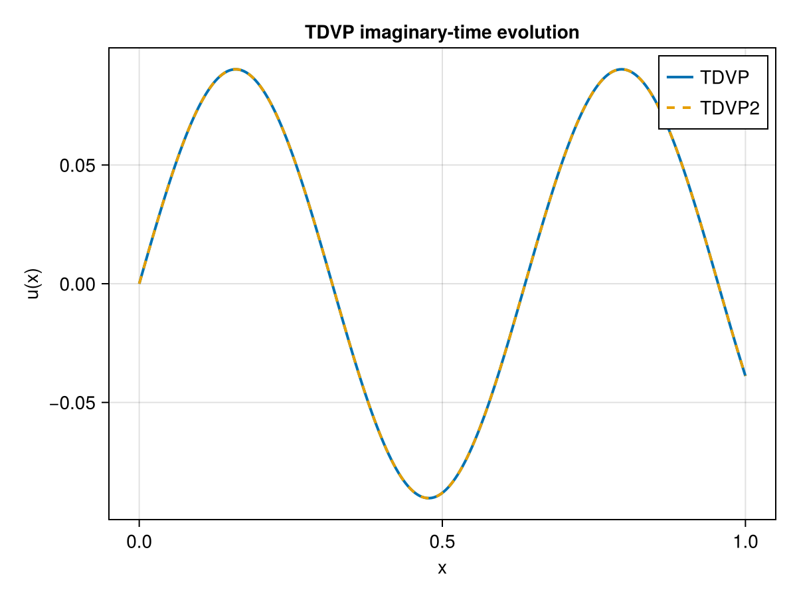
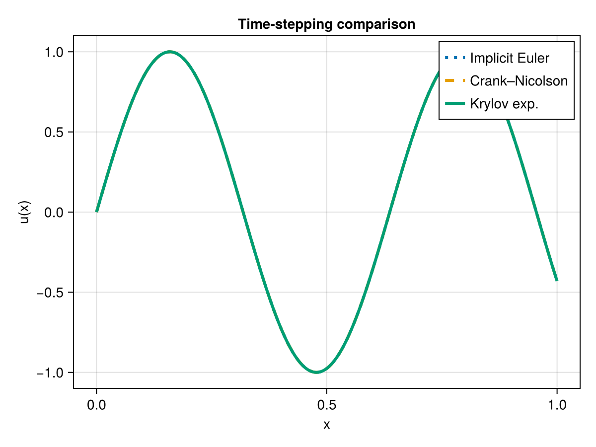

Solver Guide
TensorTrainNumerics.jl provides four families of iterative solvers for problems in tensor-train format: ALS, MALS, DMRG, and TDVP. In addition, three time-stepping methods are available for evolution problems.
All solvers operate on AbstractTTvector and AbstractTToperator inputs, so they accept both plain TTvector/TToperator and the QTTvector/QTToperator wrappers transparently.
Use linear_solve(A, b, x0, MALS(tol = 1e-10)) for linear systems and eigen_solve(A, x0, DMRG(tol = 1e-12)) for eigenvalue problems. The older *_linsolve and *_eigsolve names are kept as compatibility wrappers.
Progress meters are controlled at the outer solver level. Use ALS(show_progress = true), MALS(show_progress = true), DMRG(show_progress = true), or Krylov(show_progress = true) to show a single bar for the full linear or eigen solve. Time-evolution routines (euler_method, implicit_euler_method, crank_nicholson_method, rk4_method, tdvp, and tdvp2) show one bar over time steps by default; pass show_progress = false to silence it.
ALS, MALS, DMRG — alternating sweep solvers
These three solvers address linear systems $Ax = b$ and eigenvalue problems $Ax = \lambda x$ by sweeping back and forth over TT sites and updating one (ALS) or two (MALS, DMRG) cores at a time by solving a small dense local problem. They differ in how bond dimensions are managed.
| Property | ALS | MALS | DMRG |
|---|---|---|---|
| Bond dimensions | Fixed | Adaptive (SVD) | Adaptive (SVD) |
| Local problem | Single-site | Two-site | Two-site |
| Memory per sweep | Low | Moderate | Moderate–high |
| Convergence | Moderate | Often faster | Often fastest |
| Linear solve | linear_solve(..., ALS(...)) | linear_solve(..., MALS(...)) | linear_solve(..., DMRG(...)) |
| Eigenvalue solve | eigen_solve(..., ALS(...)) | eigen_solve(..., MALS(...)) | eigen_solve(..., DMRG(...)) |
ALS
ALS holds the bond dimensions fixed and updates one core per step. It converges reliably when a good initial rank is provided, and has the lowest memory footprint.
using TensorTrainNumerics
d = 6
dims = ntuple(_ -> 2, d)
A = rand_tto(dims, 3)
b = rand_tt(dims, [1; fill(3, d - 1); 1])
x0 = rand_tt(dims, [1; fill(2, d - 1); 1])
x_als = linear_solve(A, b, x0, ALS(sweep_count = 4))MPS{Float64} with 6 sites
Physical dims : (2, 2, 2, 2, 2, 2)
Bond dims : [1, 2, 2, 2, 2, 2, 1]
Orthogonality : [0, 1, 1, 1, 1, 1]For eigenvalue problems use eigen_solve with ALS:
E, x_eig = eigen_solve(A, x0, ALS(sweep_schedule = [4]))
println("Lowest eigenvalue: ", E[end])Lowest eigenvalue: -96.26723600922107MALS
MALS updates two adjacent cores simultaneously, then SVD-truncates the merged core to control rank growth. This allows the bond dimensions to adapt automatically.
using TensorTrainNumerics
d = 6
dims = ntuple(_ -> 2, d)
A = rand_tto(dims, 3)
b = rand_tt(dims, [1; fill(3, d - 1); 1])
x0 = rand_tt(dims, [1; fill(2, d - 1); 1])
x_mals = linear_solve(A, b, x0, MALS(tol = 1e-10))
E_mals, x_eig_mals = eigen_solve(A, x0, MALS(sweep_schedule = [4]))([-13.768868862660101, -39.40163433113789, -23.79954775825666, -61.293352958706016, -50.702995075807884, -50.702995075807884, -50.615977529865646, -42.35523282980379, -66.42413627485378, -30.167605369168506 … -19.990115503667877, -56.667248985524274, -38.83244039782641, -38.12374648360723, -51.074308891275145, -51.074308891275145, -38.10093091904499, -42.88382752881042, -49.8606606597675, -16.72123532667794], MPS{Float64}(6 sites), [2, 4, 4, 4, 4, 4, 4, 8, 8, 8 … 8, 8, 8, 8, 8, 8, 8, 8, 8, 8])DMRG
DMRG uses the same two-site update as MALS but includes richer local subspace expansion strategies that accelerate convergence, especially for eigenvalue problems. The rmax_schedule controls the maximum bond dimension at each sweep stage.
using TensorTrainNumerics
d = 4
dims = ntuple(_ -> 2, d)
A = rand_tto(dims, 3)
b = rand_tt(dims, [1; fill(2, d - 1); 1])
x0 = rand_tt(dims, [1; fill(2, d - 1); 1])
x_dmrg = linear_solve(A, b, x0, DMRG(sweep_count = 20, tol = 1e-12))
sweep_schedule = [2, 4, 8]
rmax_schedule = [2, 3, 4]
E_dmrg, x_eig, r_hist = eigen_solve(A, x0, DMRG(
sweep_schedule = sweep_schedule,
rmax_schedule = rmax_schedule,
tol = 1e-12,
))
println("Lowest eigenvalue: ", E_dmrg[end])
println("Rank history: ", r_hist)Lowest eigenvalue: -8.326685812392084
Rank history: [2, 2, 2, 2, 2, 3, 3, 3, 3, 3, 3, 3, 3, 4, 4, 4, 4, 4, 4, 4, 4, 4, 4, 4, 4, 4, 4, 4, 4]TDVP — time-dependent variational principle
TDVP evolves a TT-vector under the equation $\dot{u} = A u$ while keeping the state on the TT manifold of fixed (or bounded) rank. Two variants are available:
tdvp— single-site TDVP, fixed rank, lower cost per step.tdvp2— two-site TDVP with SVD truncation, adaptive rank.
Both support real-time evolution (default) and imaginary-time evolution (imaginary_time = true), which acts as a variational ground-state finder by computing $e^{-A\tau} u_0 / \|e^{-A\tau} u_0\|$.
using TensorTrainNumerics
using CairoMakie
d = 8
h = 1.0 / (2^d - 1)
A = h^2 * toeplitz_to_qtto(-2.0, 1.0, 1.0, d)
u0 = qtt_sin(d, λ = π)
dt = 1e-2
steps = fill(dt, 500)
sol_tdvp = tdvp(A, u0, steps; imaginary_time = true, sweeps = 4)
sol_tdvp2 = tdvp2(A, u0, steps; imaginary_time = true, sweeps = 2, max_bond = 8)
xes = LinRange(0, 1, 2^d)
fig = Figure()
ax = Axis(fig[1, 1], xlabel = "x", ylabel = "u(x)", title = "TDVP imaginary-time evolution")
lines!(ax, xes, qtt_to_function(sol_tdvp), label = "TDVP", linewidth = 2)
lines!(ax, xes, qtt_to_function(sol_tdvp2), label = "TDVP2", linewidth = 2, linestyle = :dash)
axislegend(ax)
fig
Time-stepping methods
For the parabolic problem $u_t = A u$, $u(0) = u_0$, three classical time-stepping schemes are provided. Each returns the evolved TT-vector and optionally a relative-error history.
| Function | Scheme | Stability |
|---|---|---|
euler_method | Explicit (forward) Euler | Conditionally stable, $\Delta t < 2/|A|$ |
implicit_euler_method | Implicit (backward) Euler | Unconditionally stable |
crank_nicholson_method | Crank–Nicolson | Unconditionally stable, second-order |
expintegrator | Krylov exponential integrator | Exact up to Krylov tolerance |
using TensorTrainNumerics
using CairoMakie
using KrylovKit
d = 8
N = 2^d
h = 1.0 / (N - 1)
xes = LinRange(0, 1, N)
A = h^2 * toeplitz_to_qtto(-2.0, 1.0, 1.0, d)
u0 = qtt_sin(d, λ = π)
init = rand_tt(u0.ttv_dims, u0.ttv_rks)
steps = collect(range(0.0, 5.0, 500))
sol_impl, err_impl = implicit_euler_method(A, u0, init, steps;
return_error = true, normalize = false)
sol_cn, err_cn = crank_nicholson_method(A, u0, init, steps;
return_error = true, tt_solver = MALS(), normalize = false)
sol_krylov, _ = expintegrator(A, last(steps), u0)
fig = Figure()
ax = Axis(fig[1, 1], xlabel = "x", ylabel = "u(x)", title = "Time-stepping comparison")
lines!(ax, xes, qtt_to_function(sol_impl), label = "Implicit Euler", linestyle = :dot, linewidth = 3)
lines!(ax, xes, qtt_to_function(sol_cn), label = "Crank–Nicolson", linestyle = :dash, linewidth = 3)
lines!(ax, xes, qtt_to_function(sol_krylov), label = "Krylov exp.", linestyle = :solid, linewidth = 3)
axislegend(ax)
fig
Choosing a solver
ALS is the right starting point when you already know a good rank and want low memory use.
MALS or DMRG are better when the target rank is unknown: they grow bonds during sweeps and SVD-truncate them down, so they self-tune. DMRG is often the fastest to converge for eigenvalue problems.
TDVP is the method of choice for time evolution: it respects the TT manifold geometry and avoids the rank blowup that naive time-stepping causes.
Exponential integrators give the most accurate result for diffusion-type problems at large time steps, at the cost of Krylov subspace construction per step.